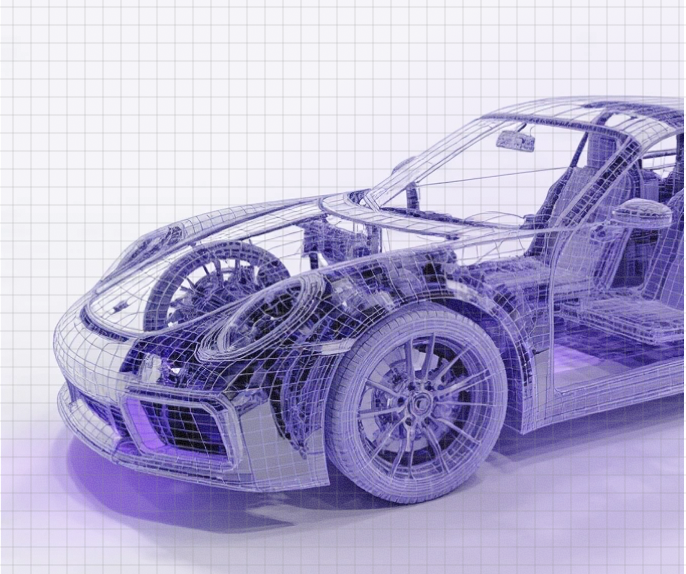
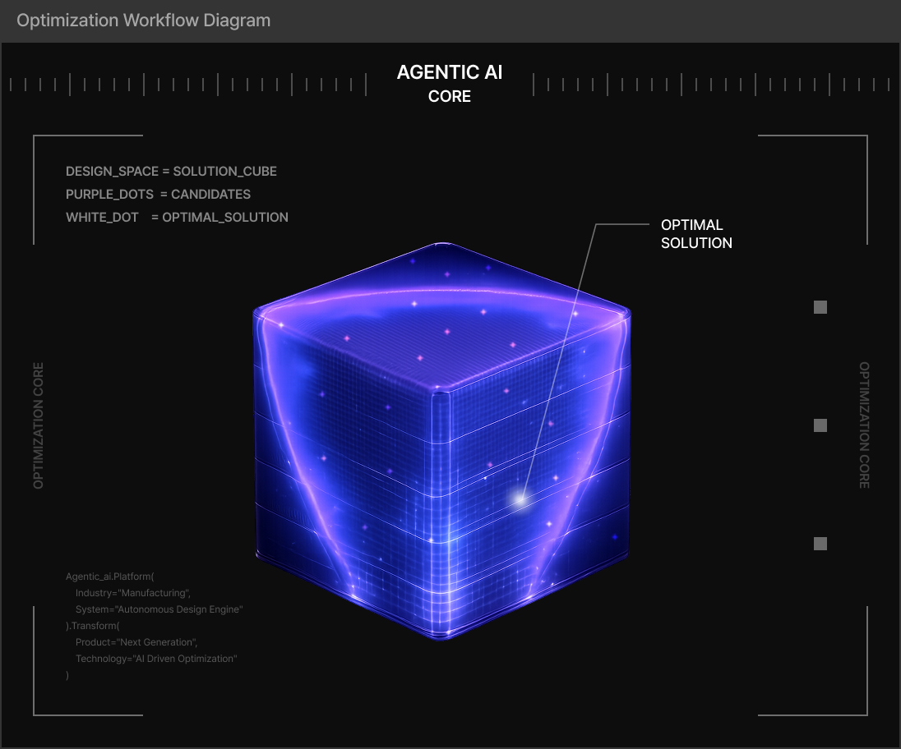
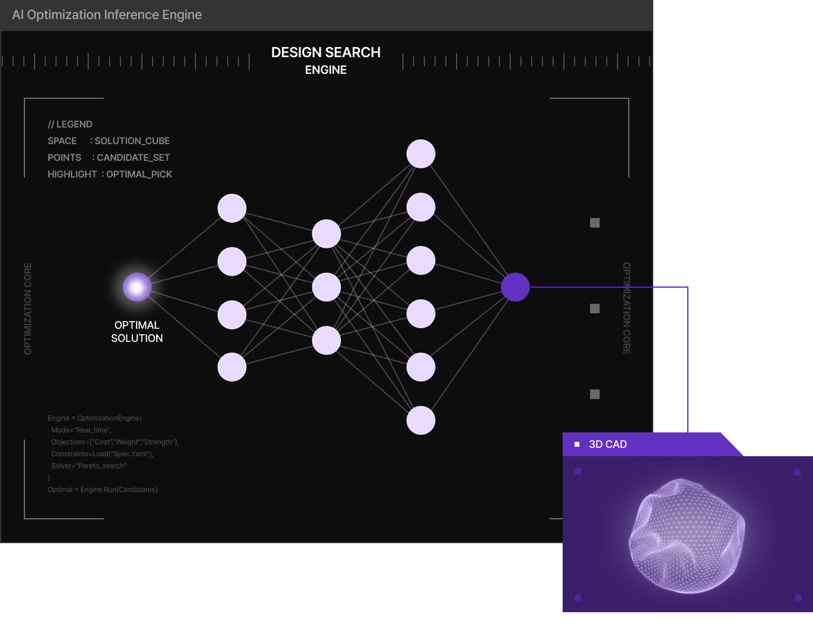

Performance-Based
Generation
Generation
AI-Driven Optimization


Deriving optimal design results in real time
The design optimization stage is where AI efficiently derives the optimal design solution.
To reduce the high computational cost of traditional sequential optimization methods,
deep learning-based inverse design techniques can be used to find solutions in real time.
When a user specifies target performance through a deep learning-based model,
a new design that satisfies those requirements is generated as output.



Finds the best-performing design solution in the reduced dimensionality space that satisfies all user-specified requirements.